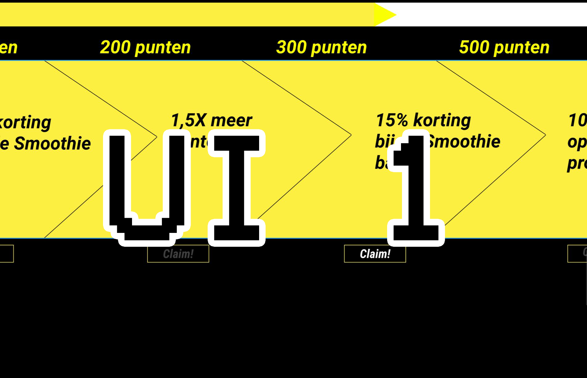
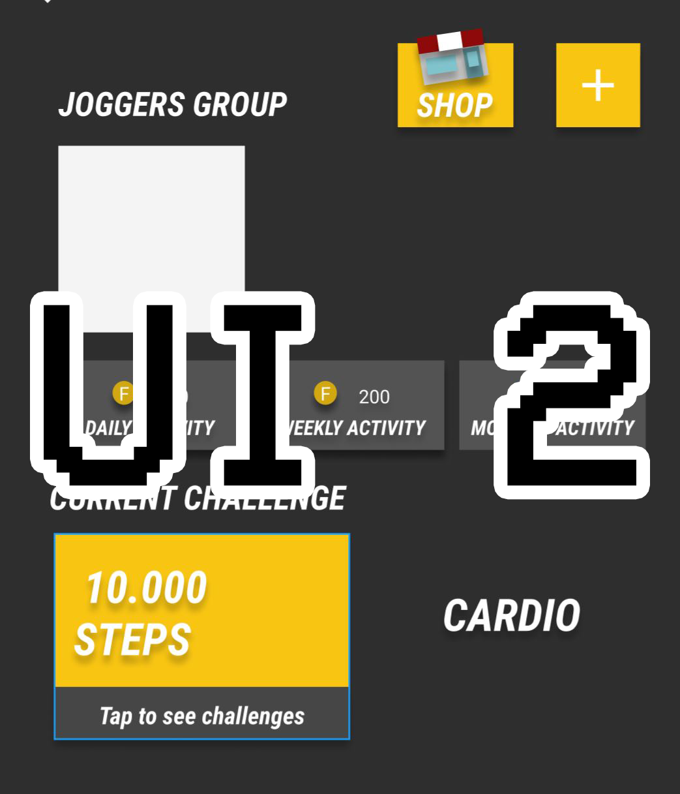

We wisten dat we een applicatie wilde maken voor ons Fitcoin idee, om dit idee meer visueel te maken besloten ik en Anass om een clickable prototype te maken in figma. Deze bevatte de belangrijkste functies die gebaseerd waren op onze eigen MoSCoW. De stijl was gebaseerd op de huisstijl die de vorige Teamup groep had gemaakt. Ook waren dingen zoals het punten proces gebaseerd op video games die op dezelfde methode mensen een gevoel van beloont worden. Hier de link naar UI 1.
Nadat we userstories hadden gemaakt van onze Scrum, besloten we om te gaan voor een mobile app voor onze teamup app. We hebben dus de functionaliteiten van onze UI 1 gepakt, en deze verwerkt in UI 2. Het verschil is nu natuurlijk de visuele stijl, dat volgens mobile guidelines zijn ontworpen. En natuurlijk was deze getest op gebruikers met een testplan. Dit is ook uiteindelijk de UI dat is gerealiseerd. Hierbij de figma van UI 2.
UI 2 is veranderd gebaseerd op de feedback van de testplan, die je hieronder ook kunt lezen met daarbij de interview die ik heb gehouden.